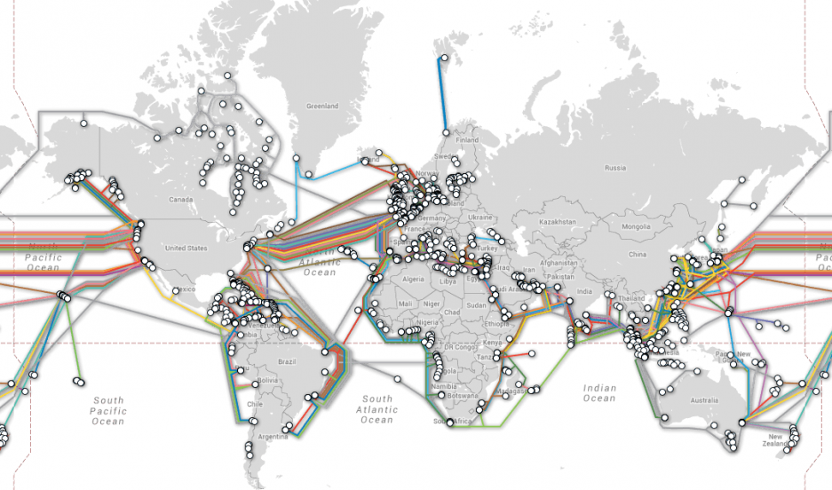

The objective of a cover letter is to write about how you will fit for a specific role and how you stand out from others. As the cover letter is going to be attached with your Resume you should not be duplicating information in your resume in your cover letter, but you can provide context and personality to make points in your resume stand out.
A Post Mortem is an excersise where a team comes together to evaluate how a project, release, or feature went for purposes of improvement. A Post Mortem is a blameless excersise and focuses on a few main points:
By the end you should have a google doc that addresses each of these points with at least one entry in each category with any feedback the team would like to contribute.
Uninitialized
Health: 10
Among the many advancements in technology that has allowed us to deliver content on the web one of the greatest assets has been CDNs. A CDN allows us to dramatically increase the speed in which content can be downloaded by requiring less physical distance in which data has to travel.
Above: Image of all Trans-Oceanic Internet Cables